About Me

My name is Rayyan Hasan Goraya, an incoming Honours Mathematics student at the University of Waterloo with a dedicated focus on mathematics, computer science, and leadership I have a strong passion for software development and game design, actively creating projects with JavaScript, HTML, CSS and Python. I am expanding my skill set by learning Unity this summer to create 3D games. I’ve collaborated under pressure at hackathons like HawkHacks and honed my leadership and organizational abilities as a Flight Sergeant in the 540 Golden Hawks Royal Canadian Air Cadet Squadron and as a Logistics Executive with the 1UP Club. In addition to my technical pursuits, I contribute to community initiatives—such as fundraising for humanitarian causes—and practice martial arts to maintain discipline, resilience, and holistic personal development.
Education
University of Waterloo

Bachelor of Mathematics (BMath) Degree
2025-2030
Accepted into the Honours Mathematics program with a $2,000 entrance scholarship. I plan to major in Computational Mathematics with a minor in Computing. My focus is on software development, game development, artificial intelligence and machine learning.
White Oaks Secondary School

Ontario Secondary School Diploma (OSSD)
2020-2025
Completed high school and developed strong problem-solving, teamwork, and communication skills through coursework and extracurricular involvement. Took initiative in leadership roles and consistently pursued opportunities to explore interests in architecture, design, computer science, and advanced mathematics. Outside of school I also earned around 200 volunteer hours from a variety of different experiences. Executive Member, 1UP Architecture and Design Club (Sept 2024 – June 2025) Member, Muslim Student Association (MSA) (2021 – 2025)
Experience
540 Golden Hawks Air Cadet Squadron

Flight Sergeant
2020-2025
In this program I have gained knowledge about aircraft, aerodromes, and drill, while also developing leadership and, presentation, skills. I have participated in numerous Field Training Exercises (FTXs), where I acquired skills such as building fires, setting up tents, constructing shelters, and engaging in various other enjoyable and educational activities.
1Up Architecture And Design Club
Logistics Exectutive
2024-2025
At White Oaks Secondary School, I actively participated in the 1UP Youth City Builders Club, a student-led initiative affiliated with Urban Minds. This program empowers high school students across Ontario to engage in urban planning and design projects that positively impact their communities .
UMMA Martial Arts
Green Stripe Student
2023-2025
Over the years at UMMA Martial Arts, I have cultivated a diverse set of skills that have significantly enhanced my physical abilities, mental resilience, and self-confidence. Currently, I hold a green stripe belt and am progressing toward achieving my green belt.
Fundraising Dinner (ICNA Relief)
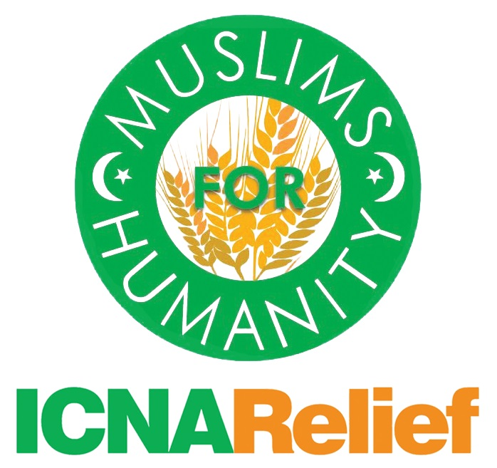Event Planner
August 4, 2024
On August 4, 2024, I collaborated with six fellow students to organize a fundraising event aimed at supporting humanitarian relief. Recognizing the urgent needs of those affected by the ongoing crisis, we partnered with ICNA Relief Canada, a reputable charitable organization known for its work in providing essential aid to vulnerable communities. The event surpassed our expectations, raising over $15,000 in donations.
Laurier HawkHacks Hackathon
Participant
May 2024
HawkHacks 2024 was a prominent 36-hour hackathon held from May 17 to May 19, 2024, at Wilfrid Laurier University in Waterloo, Ontario. As one of Canada's largest student-run hackathons, it attracted over 1,200 registrants, with 701 participants attending in person. The event featured 190 teams submitting a total of 148 projects, fostering an environment rich in innovation and collaboration.
WhiteHat Jr and BYJU's Learning

Computer Science Student
2020-2022
My journey into the world of coding began during the COVID-19 pandemic when I enrolled in WhiteHat Jr, an online coding platform later acquired by BYJU'S in 2020. This platform provided a structured introduction to programming, covering fundamental concepts such as logic, structure, sequencing, and algorithmic thinking .
Volunteering
Youth Leadership Development Program (ICNA Relief)
20 Hrs
July/August 2024
Through the YLDP, I gained hands-on experience in leadership, public speaking, and event planning. Each week featured a new guest speaker from a different professional background, which gave me a broad and diverse understanding of leadership styles, community engagement, and organizational development. The program pushed me out of my comfort zone and helped me grow significantly in my ability to collaborate with others and connect with people from different walks of life.
Ramadan at Al Falah (Local Mosque)
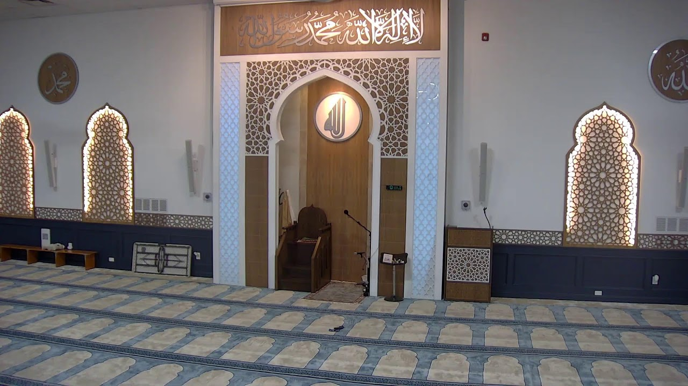150 Hrs
2023 and 2024
During the holy month of Ramadan in both 2023 and 2024, I dedicated over 100 volunteer hours supporting my local mosque and its congregation. My responsibilities included distributing water and dates for iftar, handing out food packages after nightly prayers, coordinating crowd flow, and assisting with on-site logistics to ensure a smooth and welcoming experience for all attendees.
Poppy Selling (Air Cadets Fundraising)
10 Hrs
November 2023
In November, I took part in a community-driven fundraising initiative in support of veterans for Remembrance Day. I helped raise approximately $200–$300 CAD by selling poppies and engaging with members of the public outside local retail stores.
ICNA Fest At Al Falah (ICNA Relief)
20 Hrs
2023 and 2024
I volunteered at ICNA Fest in both 2023 and 2024, contributing to the successful setup and execution of this large-scale community event. My responsibilities included assembling tents, arranging chairs, inflating and supervising bouncy castles, and assisting with overall event logistics.
HDSB Virtual Conversation Club
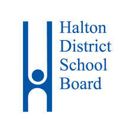7 Hrs
Sept-Nov 2022
As a member of the HDSB Virtual Conversation Club, I engaged in weekly discussions designed to build social connections and strengthen communication skills. The program encouraged students to expand their networks, share experiences, and explore ways to get involved and contribute meaningfully to the local community.
Projects


Problems Around The World

JavaScript, HTML, and CSS
January 2022
Play
Fun Challenging Game

JavaScript, HTML, and CSS
June 2021
Play
Model Home
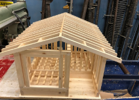Woodworking/Construction
November 2023
Muskoka Chair
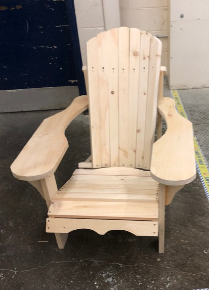Woodworking/Construction
January 2023
Awards/Honours
Air Cadet Graduation Plaque
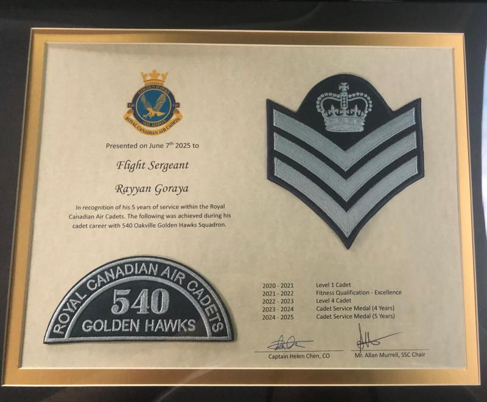June 2025
Air Cadet 5 Year Service Medal
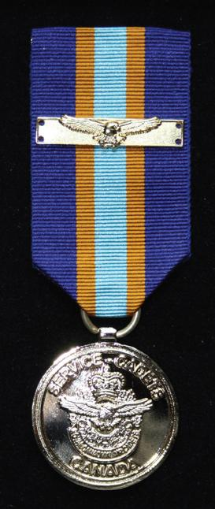June 2025
Air Cadet 4 Year Service Medal
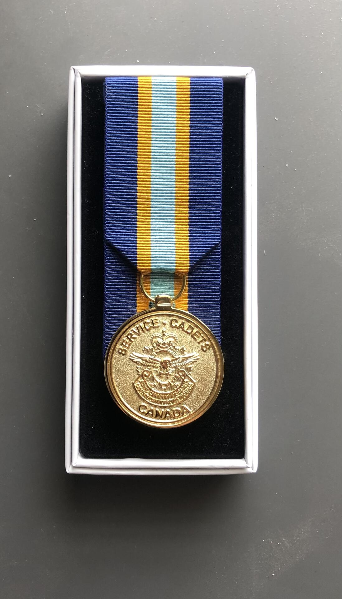June 2024
Grade 11 Honour Roll
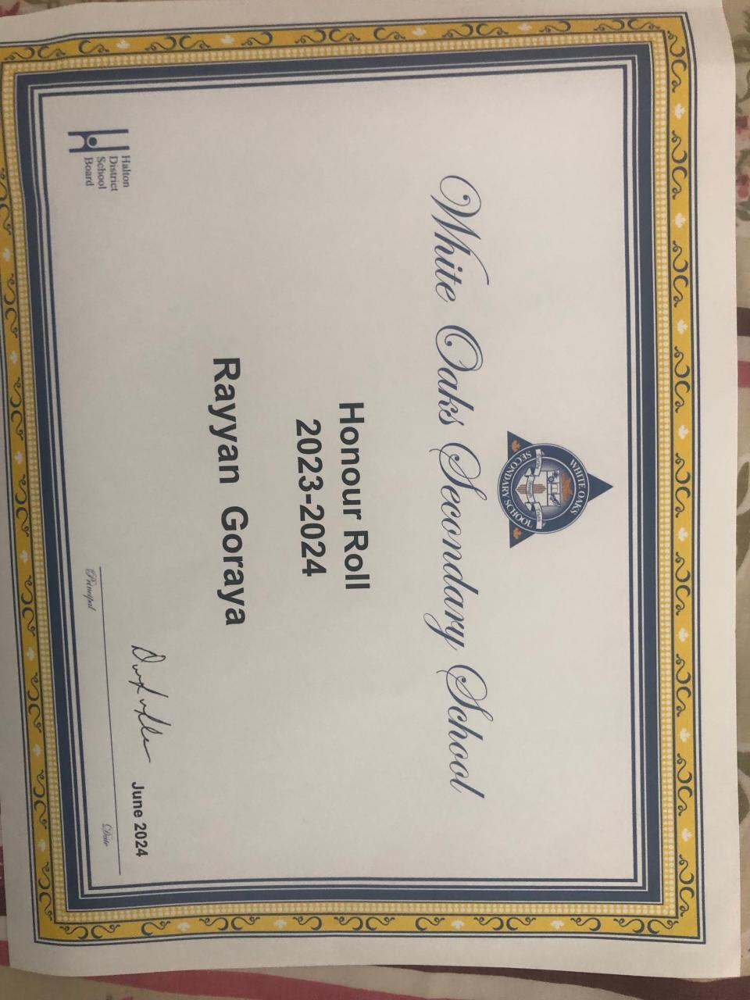June 2024
Grade 10 Honour Roll
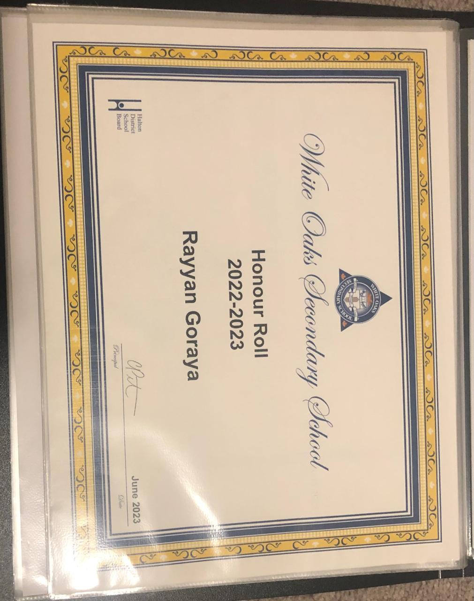June 2023
Grade 9 Honour Roll
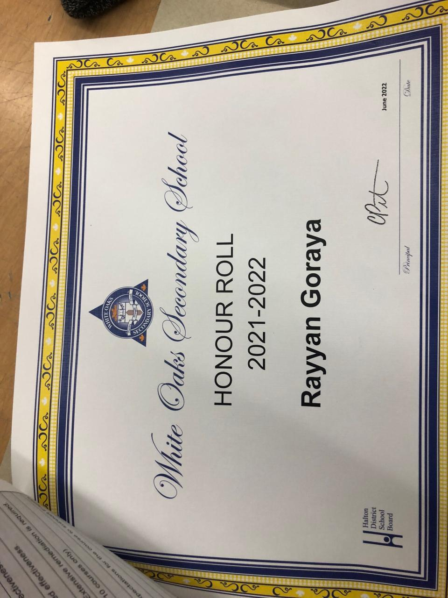June 2022
Certifed Game Developer
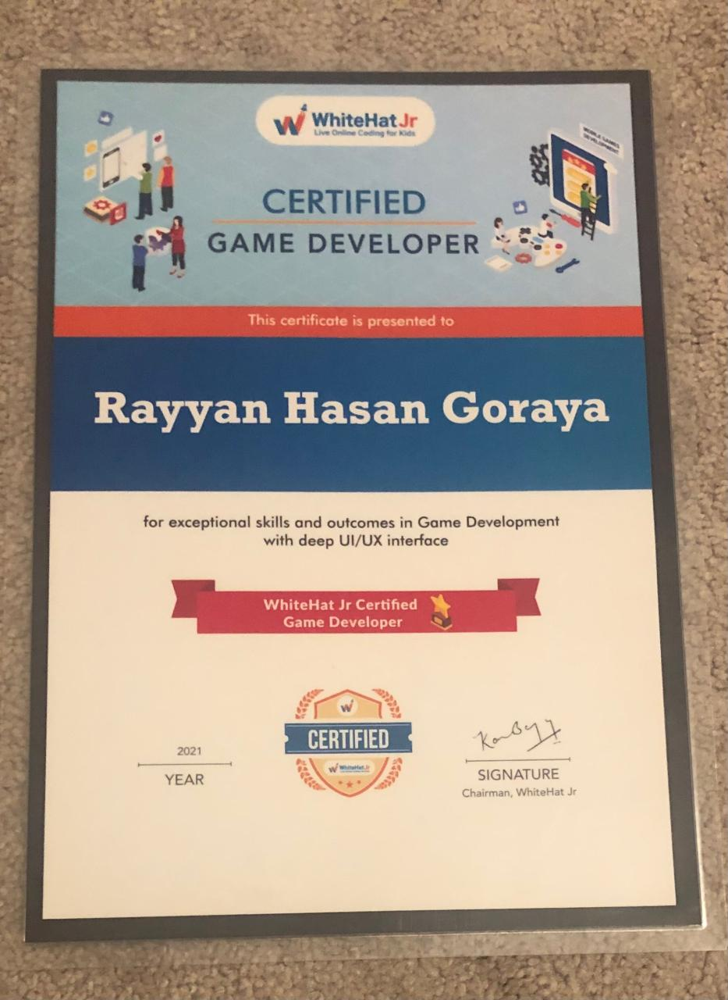January 2021
Skills